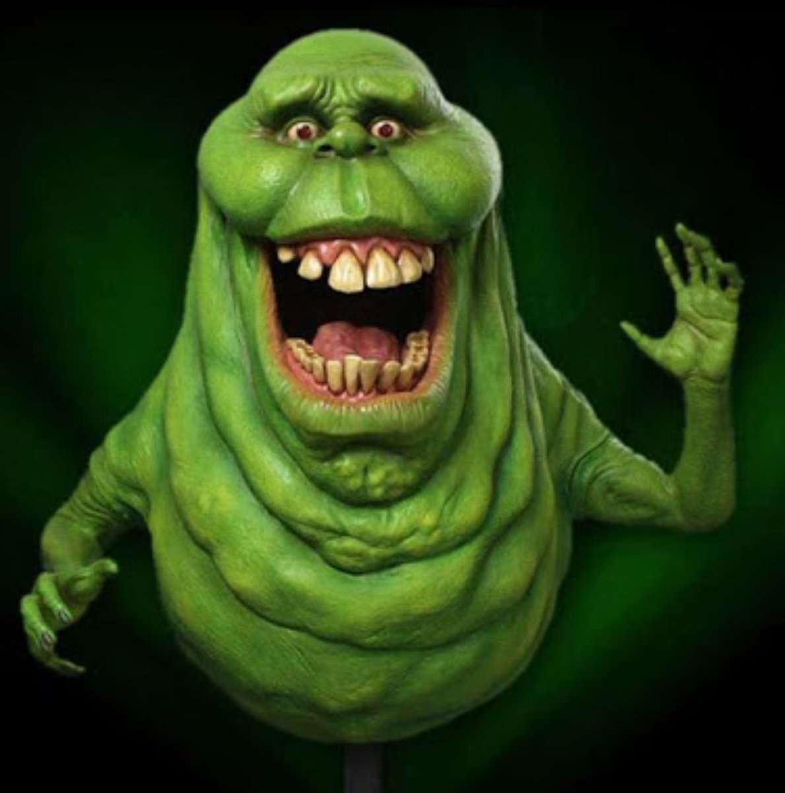
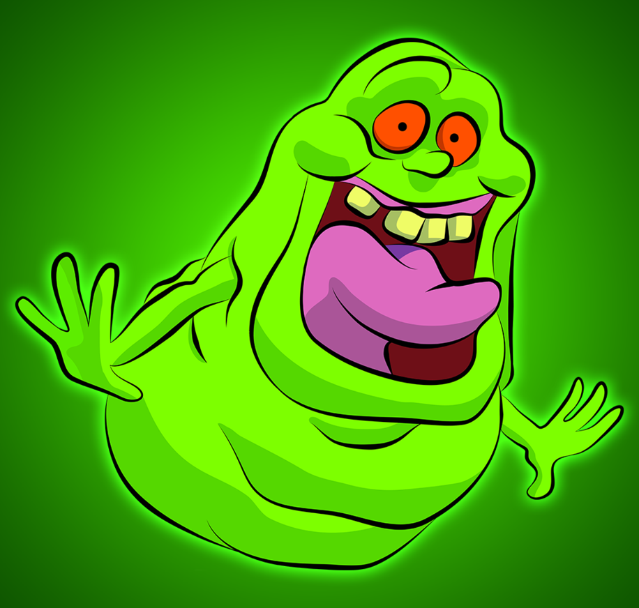
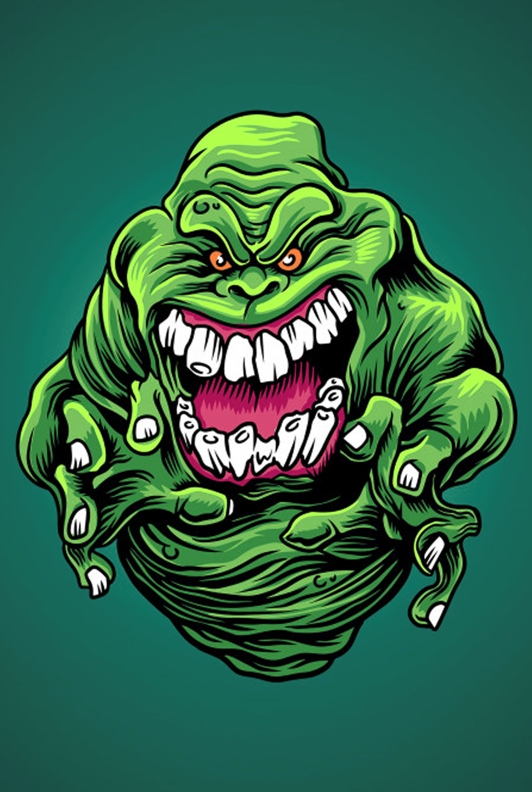

Geleia
- Caracteristicas: Se esconde sempre na cozinha buscando comidas, pois sempre está com fome
- Atração: Ele é atraido por lugares secos e se atria facil por alimentos gordurosos
- Força: Quando de barriga cheia, possui uma enorme força
- Fraquezas:Ficar sem alimentos
- Como derrotar: Para derrotar ele você precisa de um Aspira-Fantasma